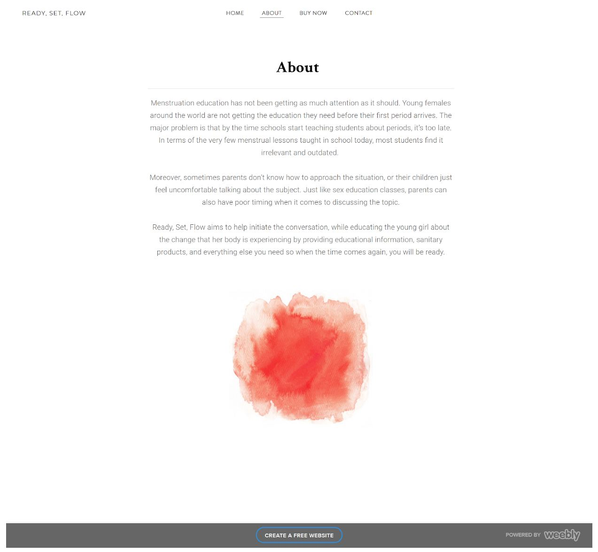
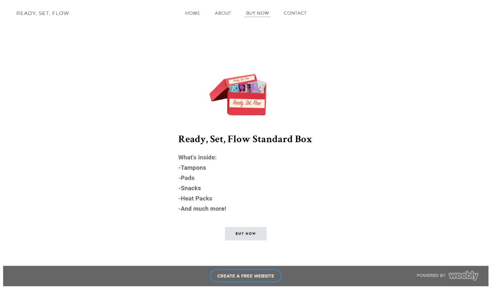
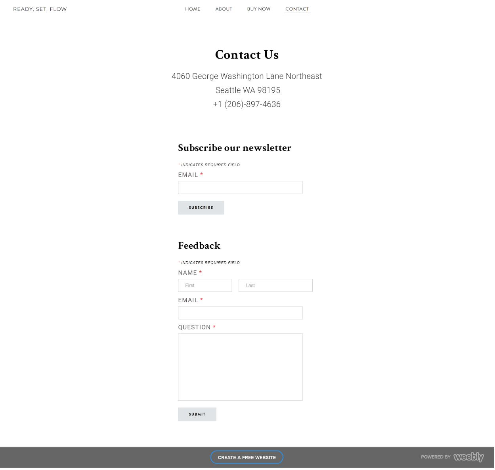
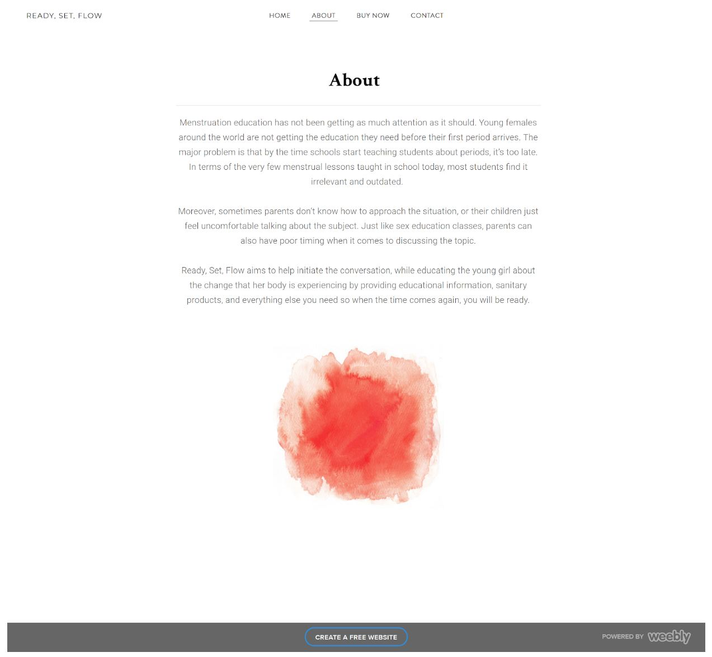
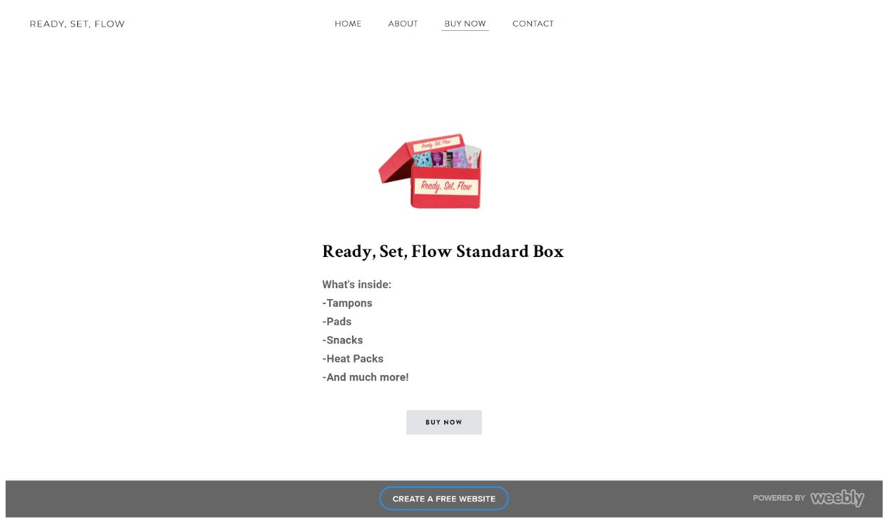
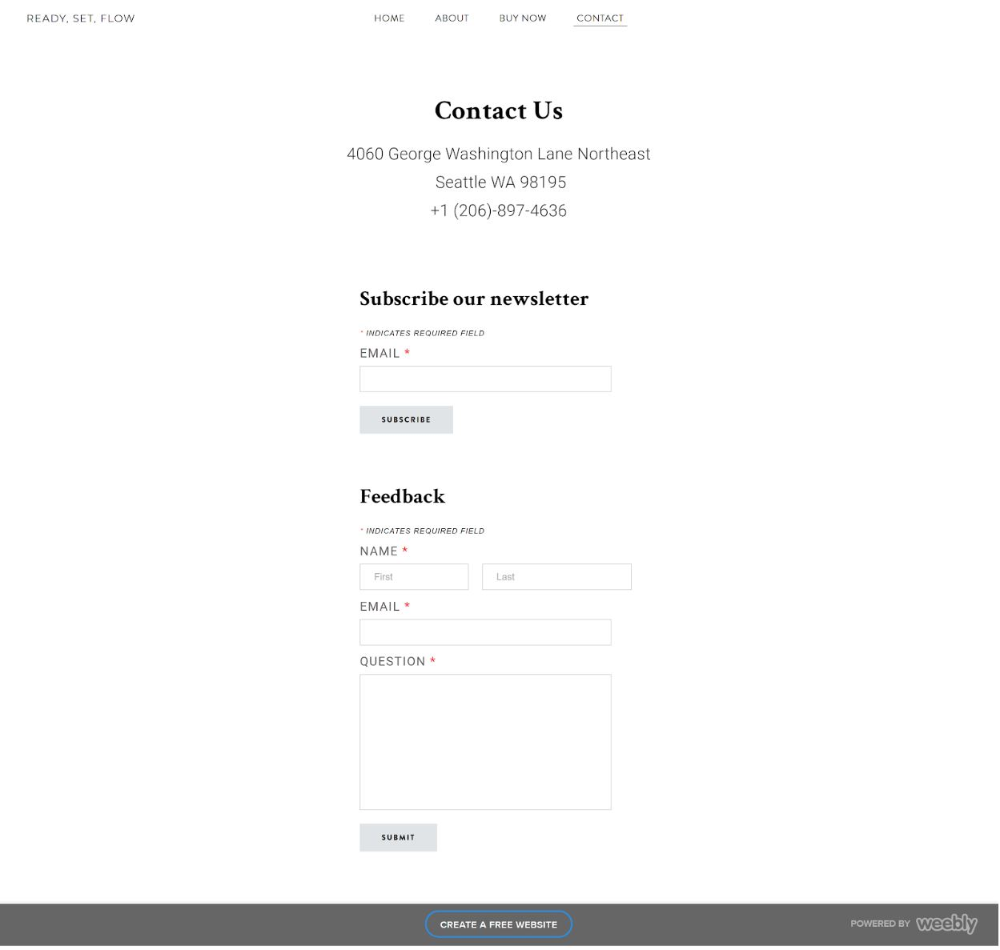

Ready, Set, Flow
Click here to view the prototype website we created!
About
Click here to view the prototype website we created!
About
This project was a part of the Info(Informatics) 200 course at UW Seattle. We found a problem to address, came up with a solution for it, and went through the design process in a matter of 10 weeks.
"As a group, we decided to focus our knowledge on menstrual education. We worked on making the talk of the flow, flow a little bit easier. Many young women around the world have little to no education about their menstrual cycle before it arrives. We have a solution to help young women start their path to womanhood. Having a period shouldn’t be treated as an inconvenience, and learning about it shouldn’t be either."
 




